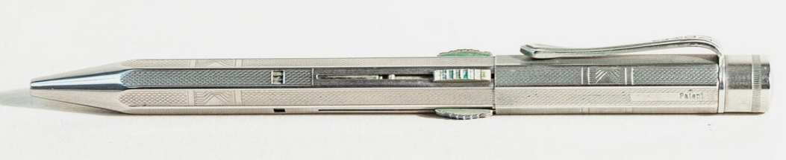

Fend Norma
Der "Einhand"-Vierfarbstift
Stand: 07.05.2026
Dies ist ein Unterartikel. Hier geht es zum Hauptartikel über Fend

Bis 1930 hielt die Firma Fend allen Krisen dank guter Auslandsgeschäfte stand. Allerdings die Weltwirtschaftskrise nicht, aufgrund derer in diesem Jahr Entlassungen vorgenommen werden mussten.
Ein Vierfarbstift schuf neue Hoffnung für die Firma: Der Fend Norma, patentiert vom berühmten Erfinder Albert Hirth im Dezember desselben Jahres 1930.
Albert Hirth war zu diesem Zeitpunkt bereits 72 Jahre alt und verstarb nur 4 Jahre später. Es war seine letzte Erfindung.
Eine Vermutung ist, dass Hirth Fend die Lizenz zur Herstellung verkaufte unter der Bedingung, dass seine Firma "Albert-Hirth-AG" die nötigen Spezialmaschinen liefern solle.
Der Aufbau des Fend/Hirth Norma war sehr simpel:
Beim Herunterschieben des Minenhalter-Schiebers schnappt eine Zunge in eine Öffnung unterhalb des Schieberschlitzes ein, die den Minenhalter in Schreibposition hält. Die Rastöffnung liegt nahe der Schreiböffnung, wodurch es dem Bediener möglich ist, mit der den Stift haltenden Hand ohne großes Umgreifen die Zunge einzudrücken, wodurch der Minenhalter durch eine Druckfeder wieder in den Stift zurückgefahren wird.
Die Marke 'Norma' wurde unter der Firma Fend, nicht von Albert Hirth, 1931 eingetragen.
Es wird angenommen, dass der Name 'Norma' von Hirths gleichnamiger Kugellagerfabrik stammen könnte. Der Name befand sich wie bei Stiften üblich meist auf dem Klipp.
Statt 'Norma' finden sich auf dem Klipp im Ausland die Namen 'Colorgraph' (Italien), 'Turna' (Großbritannien) und 'Dictator' (Schweiz).
Innerhalb Deutschlands wurden auch Versionen mit den Namen 'Stöffhaas' und 'Goldfink' für die gleichnamigen Schreibwarengeschäfte hergestellt.
Sehr wahrscheinlich am Fend Norma orientiert stellte die "Norma Multikolor" aus den USA ihre eigene Version her, welche dort 1935 von Hans Maucher (USA) patentiert wurde.
Hellmuth Hirth, einer Alberts Söhne, verschenkte 1936 zur Feier des tausendsten "HM 60" (HM = Hirth-Motor) den ältesten Mitarbeitern seiner Firma "Hirth-Motoren GmbH Stuttgart Zuffenhausen" einen silbernen Fend Norma.
Einen weiteren Stift spendierte besagte Firma der angemessen kleinen Anzahl an Teilnehmern des "Schwabenflug 1937" vom 29. Mai 1937. Diese war eine regionale, mehrtägige Flugveranstaltung, welche seit 1909 bestand und vom Aeroclub Baden-Württemberg veranstaltet wurde, dessen wichtigster Förderer zu jener Zeit Albert Hirths anderer Sohn, der Flugpionier Wolf Hirth, war.
Mehr Inhalt folgt in Zukunft.